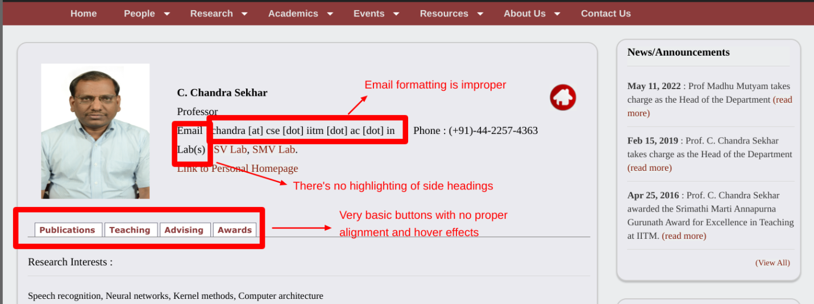

Website Analysis: CSE IITM Faculty Profile Page
Annotated Issues
Below are the problems identified on the
CSE IITM Faculty Profile Page
using the Awesome Screenshot tool:
-
Outdated Design: The layout lacks modern design
elements like proper spacing, responsive grids, and visual balance.
-
Improper Alignment: The content, including text, links,
and headings, is not aligned consistently, making it look cluttered.
-
Missing Visual Hierarchy: The headings, subheadings,
and content all appear with similar font sizes, which reduces
readability.
-
No Responsive Design: The page does not scale well on
smaller screens, making it difficult to view on mobile devices.



Better Websites for Inspiration
Here are examples of websites that have implemented faculty profile pages
more effectively:
- Modern Design: Clean layout with well-aligned
sections and sufficient spacing.
- Visual Engagement: Faculty images, brief bios, and
research interests are displayed clearly.
- Responsiveness: Works seamlessly across devices
(desktop, tablet, and mobile).
- Visual Hierarchy: Use of bold headings, faculty
photos, and consistent typography improves readability.
- Search and Filters: Allows filtering faculty members
by research areas, positions, or names.
- Accessibility: Information is structured and easy to
navigate for all users.
Recommendations for Improvement
-
Add Visual Hierarchy: Use larger fonts for headings,
consistent typography, and clear spacing to improve readability.
-
Use CSS Grid or Flexbox: Align the content in a grid or
flex layout for better organization and responsiveness.
-
Introduce Filters and Search: Allow users to filter
faculty members based on research interests, alphabetical order, or
position.
-
Modernize the Design: Adopt a clean and minimalistic
design with an updated color scheme, icons, and improved user interface.